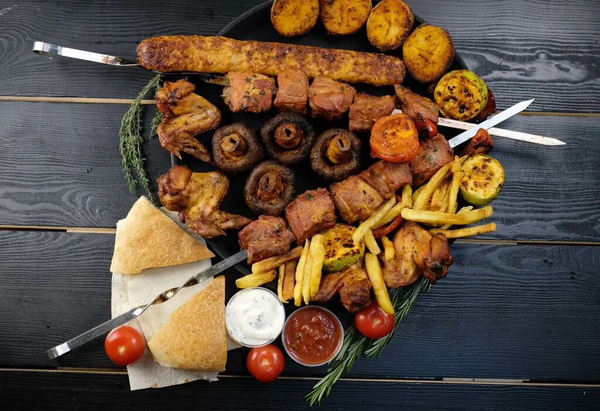
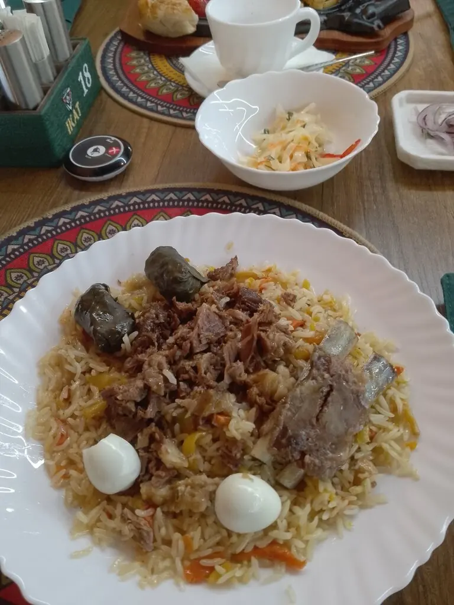
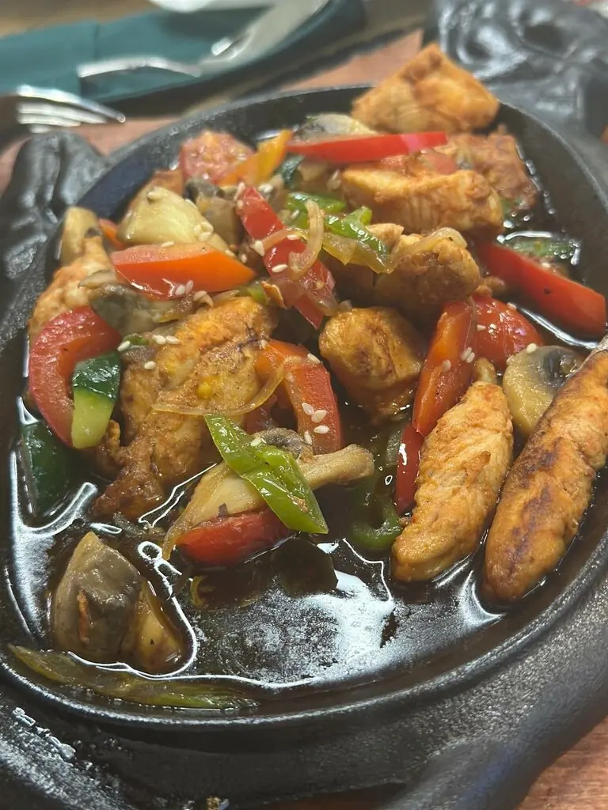
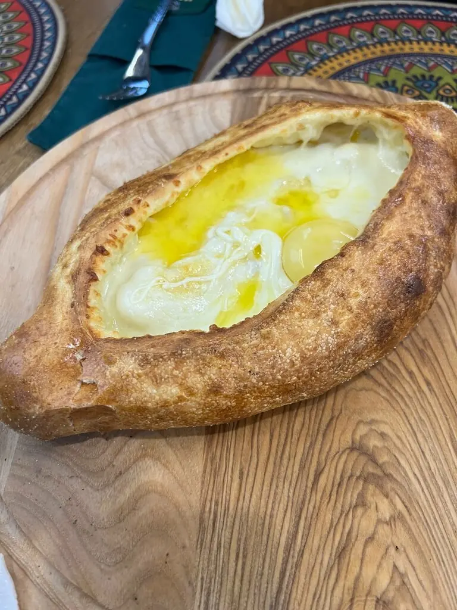
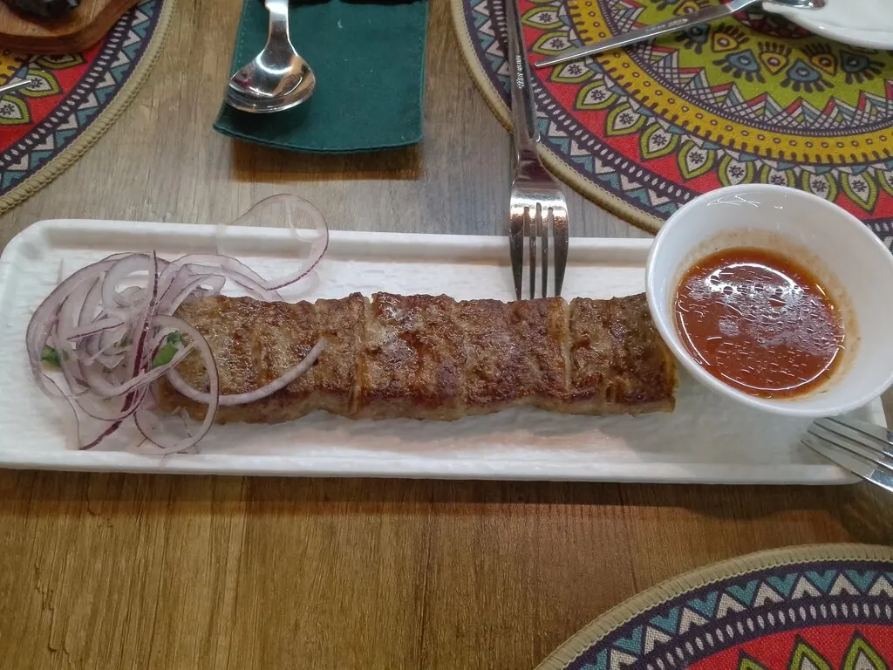
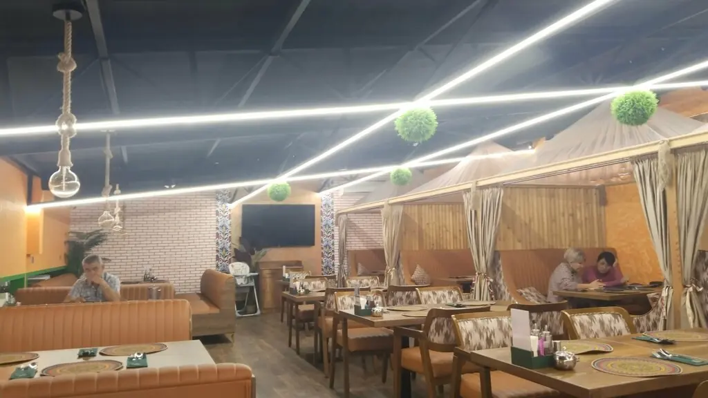

Ikat
Как ткань, которую ткут вручную: плов, лагман и кебаб, сотканные из восточных традиций. И беседки со шторами, если хочется только вдвоём.
4,8 · 494 оценки

Узор меню
Супы
Дум шурбо580 ₽
Лагман580 ₽
Лакса с морепродуктами690 ₽
Мастава450 ₽
Горячее
Буг-кебаб890 ₽
Гардан-кебаб с бараниной775 ₽
Кавурдок650 ₽
Долма450 ₽
Вок
Мясо Милан955 ₽
Острое мясо930 ₽
Садж-тау по-турецки875 ₽
Лапша-гнездо710 ₽
Завтрак
Завтрак Икат410 ₽
Сырники со сметаной350 ₽
Рисовая каша с финиками340 ₽
Овсяная каша с ягодным джемом350 ₽
Часть меню с Яндекс Карт, цены уточняйте у официанта.





Беседка со шторами
Закрыл шторы, и шумного зала будто нет. Гости выбирают беседки для свиданий и больших семейных ужинов.
Отзывы
Очень вкусные блюда, большие порции и уютные уединённые беседочки.Екатерина Гусенкова
Меню очень разнообразное и всё вкусно, интерьер класс.Javohir Umarjon
Лучший шашлык. Всё бесподобно! Спасибо.Александр Живов